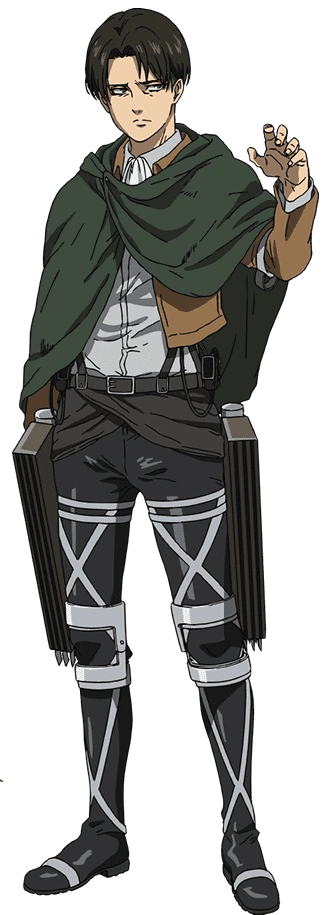

Я хочу положить конец этому повторяющемуся кошмару прямо сейчас.
Есть те, кто встанет у меня на пути.
Но я отлично играю роль сумасшедшего, который убивает таких людей.
— Леви объясняет свои мысли команде.

У Леви короткие, прямые, чёрные волосы, уложенные прямым пробором на правую сторону с грубо подрезанными концами;
узкие, пугающие, тусклые серо-синие глаза с тёмными кругами под ними из-за недосыпания и обманчиво молодое лицо.
Он невысокого роста, но у него хорошо развита мускулатура благодаря частому использованию УПМ.
Как правило Леви либо хмурится, либо ничего не выражает, что в совокупности с его чрезвычайно спокойным поведением,
часто мешает другим понять, о чём он думает.
Чаще всего его можно увидеть в униформе Разведкорпуса со светло-серой рубашкой на пуговицах под ней и его фирменным
жабо. Отправляясь в экспедицию за стенами, он также носит зеленый плащ с капюшоном и эмблемой Разведкорпуса сзади.
Когда Леви был вынужден оставить свои обязанности капитана из-за травмы, он носил чёрный костюм, простую белую
рубашку, чёрные лаковые туфли и всё тот же белый жабо.
Однако с начала государственного переворота Аккерман перестал повязывать поверх ворота рубашки жабо. Большую часть
времени, в течение которого Разведкорпус находился в бегах от военных и монархии, он просто носил ремни для УПМ
поверх своей повседневной одежды.
После взрыва от громового копья, запущенного Зиком, у Леви появилось несколько шрамов на лице, в том числе один
на правом глазу, и отсутствуют оба пальца — указательный и средний — на правой руке.
Капитан Леви описывается как «Чистоплюй» теми, кто знает его лично, поскольку Аккерман предпочитает, чтобы его
окружение, впрочем как и он сам, были безупречно чистыми. Он не любит пачкаться, а свои, запачканные кровью, клинки,
как известно, вытирает, ещё находясь на поле боя. Однако он без колебаний прикоснется к грязи, если сочтет это
необходимым.
Несмотря на своё пристрастие к чистоте, Леви очень обособлен и необщителен. Он редко проявляет эмоции, производя на
окружающих не самое лучшее впечатление. Его манера речи отличается прямолинейностью, грубостью и обилием
оскорблений, а его комментарии зачастую грубые или неуместные. Он не боится провоцировать и унижать тех,
кто противостоит ему или раздражает его. Его чувство юмора склонно к пошлому, оскорбительному и мрачному.
Всё это делает его очень сложным в общении для большинства людей.
Во время своей преступной жизни в трущобах, до вступления в Разведкорпус, Леви отказывался подчиняться чьим-либо
приказам, хотя он очень доверял своим товарищам. Однако после вступления, Леви стал очень уважать главнокомандующего
Разведкорпуса — Эрвина Смита, чьи требования и приказы он выполнял беспрекословно. Леви также доверяет и
своим подчинённым.
Но под такое «поведение» Леви попадает лишь определённый круг людей, которых он уважает. При этом у него нет
проблем с демонстрацией открытого пренебрежения к любым другим людям и в особенности к стоящим у власти. Так во
время суда над Эреном, Леви открыто оскорбил торговцев, назвав их «свиньями», а Военную полицию обвинил в
недостаточной компетентности и в неспособности справиться с Эреном. И дабы план Эрвина по вербовкe Йегера в
ряды Разведкорпуса не провалился, ему пришлось вмешаться, дабы остановить последнего от участи быть расстрелянным
на месте.[24] Леви, в добавок ко всему, открыто возмущается поведению и деяниям стоящих у власти за их постоянные
попытки подорвать деятельность Разведкорпуса, предположительно, из-за преступной жизни, которую он вёл до того,
прежде чем присоединиться Разведкорпусу.
Хотя Леви и редко проявляет это, но у него есть чувство морали и сочувствия. Огромное значение он придаёт
сохранению человеческой жизни, поэтому говорит своему отряду, чтобы те использовали весь свой ум во избежания
ошибок, которые могут стоить им жизни. Это особенно заметно, когда выясняется, что все титаны когда-то сами быть
людьми. Мысль о том, что он бессознательно убивал людей всё это время, сильно его беспокоит. Так же Леви принял
очень близко к сердцу потерю своего первоначального отряда от рук Энни Леонхарт.
Из-за опасной профессии и личных моральных устоев Леви заботится о благополучии своих подчинённых. Когда ему было
приказано отступать из-за фиаско на 57—й миссии, Леви был явно огорчен тем, что так много его солдат погибло зря.
Позже он рисковал своей жизнью в битве с Энни Леонхарт, которая до этого убила весь его отряд, чтобы вытащить Эрена
из её рта, а также защитить Микасу, ослеплённой жаждой мести. По возвращению за стены к нему подошёл отец Петры и
с гордостью рассказывал о своей дочери, а так же о её непоколебимой преданности Разведкорпусу. Леви молчал, так
как был слишком подавлен гибелью своих подчинённых. Он лишь сказал, что воля его товарищей живёт с ним, и что
именно она укрепляет его решимость продолжать сражаться.
Несмотря на то, что Леви находится в подчинении Эрвина, он действует довольно независимо. Многие из его убийств
титанов совершались в одиночку без непосредственного сотрудничества с другими солдатами. Он обычно поручает им
патрулировать территорию поблизости. Аккерман без колебаний отдаёт приказы, когда это необходимо, но при этом не
видит себя таким лидером как Эрвин Смит. Похоже, что он не особо ценит иерархию в целом и как можно чаще оставляет
принятие решений на усмотрение подчиненных.
Леви знает, что его боевые навыки находятся на другом уровне, чем у почти любого другого живого солдата. Он не
высокомерен, поскольку знает на личном опыте, что ни один человек не является неуязвимым. Мало кто будет спорить
с его утверждениями, что только он один может справиться с некоторыми трудными задачами. Аккерман не раз доказывал
свои способности в их исполнении.
Леви жесток и хладнокровен к титанам, убивая их без разбора с очевидным безразличием. Однако, когда его подчинённые
по вине Зика превратились в титанов, Леви ненадолго задался вопросом, осознают ли они всё ещё свои действия, будучи
заключенными в тела титанов. Тем не менее он перебил их всех. Имея дело с людьми, которых он считает врагами
человечества, Леви способен вести себя по-садистски. Например, когда Женская Особь была захвачена, Леви, наблюдая
за её страданиями, подробно описал, как он намеревался искалечить её человеческое тело. Так же он принимал
активное участие в пытках Санеса. После победы над Зиком во второй раз, он ясно дал понять, что собирается
истязать его за все те преступления против Парадиза и Разведкорпуса, пронзив его копьем. Леви не проявляет никаких
эмоций в такие моменты кроме кровожадности, о чём свидетельствует тот факт, что он методично кромсает Зику ноги.
Иногда Леви теряет спокойствие и использует угрозы, в том числе и насилие, чтобы заставить других слушать его,
даже если они являются членами Разведкорпуса. Пример такого поведения был показан, когда он прямо приказал
Хистория Рейсс взять на себя роль королевы. Но когда она неуверенно говорит, что не годится нa эту роль,
он тут же хватает её, отрывает от земли, душит и приказывает сопротивляться, если ей это не нравится.
Затем он роняет её и кричит, чтобы та наконец-то приняла решение. Тем не менее, снова успокаивается,
когда Хистория выполняет его требования.
Леви — сын Кушель Аккерман, которая работала в борделе подземного города и неизвестного клиента. Кенни, являющейся
старшим братом Кушель, убеждал женщину бросить ребёнка. Однако она не послушала и решила сама воспитать сына.
Когда же Кенни оказался в рядах полиции, он разыскал сестру, желая помочь ей. Однако было поздно — Кушель умерла
в результате болезни.Там же он нашёл исхудавшего и умирающего от голода Леви, сидящего перед кроватью своей матери.
Проявив редкое сострадание, Кенни берёт опеку над Леви и в течение нескольких лет воспитывает его, обучая тому, что
знал сам о сражениях и выживании. Леви также научился использовать свою внутреннюю силу, которой он обладал как
член клана Аккерман.
Прошло время и, в конце концов, Кенни научил Леви всему, что знал. Однако при этом не считал себя подходящим на
роль отца.Как-то раз Леви развязал драку, из которой легко вышел победителем. В этот момент Кенни решил
оставить мальчишку, довольный тем, что научил навыкам, необходимым для выживания.
Спустя какое-то время Леви знакомится с Фарланом. Тот решил проверить силы Аккермана, заставив сразиться с другой
бандой головорезов. Его план состоял в том, чтобы увидеть Леви в деле, дабы решить, вербовать его в свою группу.
Фарлан был удивлён, увидев, что Леви победил их всех в одиночку. В скорем времени они стали друзьями и в конце
концов вместе создали банду. После одного из множества ограблений, проведённых их бандой, Фарлан был назначен
ответственным за разделение прибыли от работы между своими товарищами. Зная, что Ян получил травму ноги и ему
понадобятся дополнительные деньги, чтобы позволить себе лекарства, Фарлан дал Яну большую долю по сравнению с
остальными. Заметив это, Леви спросил, почему он так поступил.
Объяснение Фарлана было прервано появлением молодой девушки на пороге их дома. Увидев, что её преследуют, Фарлан
и Леви дали отпор её преследователям. На вопрос, почему они за ней гнались, Изабель показывает птицу, которую всё
это время держала в ладонях, и сказала, что всего навсего пыталась выпустить её на поверхность. Именно по этой
причине она пыталась прокрасться по лестнице. Увидев, как эти двое совершают ограбления, используя украденные УПМ,
она спрашивает, может ли стать одной из них. Леви соглашается с условием, что сначала Изабель должна научиться
уборке.
После того, как Изабель освоила УПМ, а птичка поправилась и была выпущена на волю, троице поступает предложение о
работе. Их предоплата — это лечение их друга Яна, которого уже отправили в клинику на поверхности.
Леви рассматривает это не как сделку, а как захват заложника. Вместо того, чтобы предложить оплату как итог,
их клиент подслащивает сделку и говорит, что в случае успеха они получат право жить на поверхности.